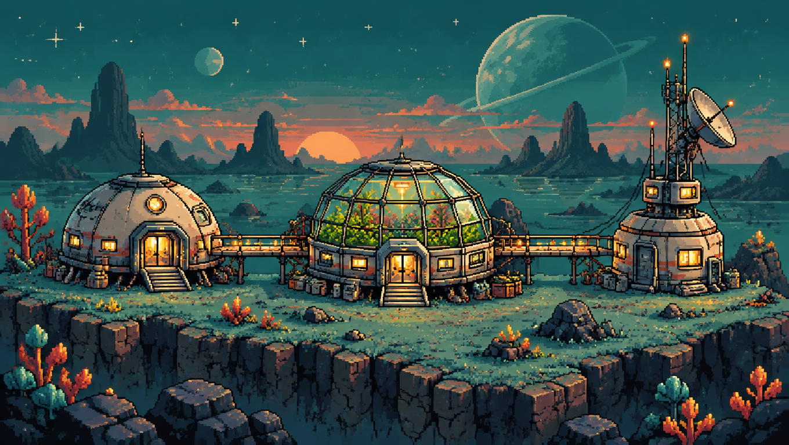

✦
星屿修复站
0 / 9
关已完成
成就
0 / 13
漂流星球 · 第 07 号基地
修复这座小小的基地
选择一处设施，完成三项修复任务。

休息舱
0 / 3
温室
0 / 3
通讯塔
0 / 3
01
休息舱
数字华容道
0 / 3
02
温室
旋转水管
0 / 3
03
通讯塔
信号连线
0 / 3
基地已全部修复。九颗小小的信号灯，终于都亮了。
← 返回
基地档案
成就图鉴
← 返回基地
第 1 / 3 关
重新开始
✦
修复完成
能源已接通
返回地图
下一关